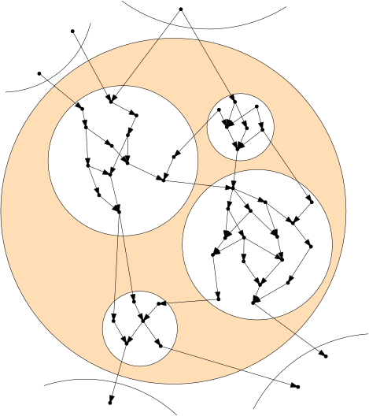
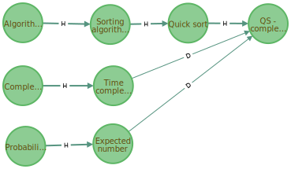

| tags:[ system ]
Representing knowledge using graphs
Information in this post is superseeded by a material page
In this post we will discuss how to tackle representing an abstract structure as a graph (combinatorial graph). In particular, we will focus on representing a general knowledge structure. Our example arises from an academic environment. We have courses which teach students various concepts and skills. Our goal is to have some searchable representation of taught concepts. This representation can be used to generate student profiles and recommend suitable semestral projects, or to find what is (unintentionally) omitted from the curricula.
In the first section we describe a reasonable general structure which is sufficient for the knowledge representation. Then we discuss how to tackle the changing nature of the representation by using user interaction. And last, we focus on a possible implementaiton.
Graph structure
We have nodes describing notions at various depth of abstraction, and directed edges describing relations. Nodes themselves can contain descriptions of their meaning. Edges can be divided into the following types. One kind of edges describe generalization and concretization in the node abstraction hierarchy. Other kind of edges describe dependency, i.e., one should know the first node to understand the other node. Let us call the edge types hierarchy and dependency edges respectively.
There can be issues concerning resolution of the graph, because the graph is inherently incomplete. A notion can usualy be divided into even more elementary notions, which might be irrelevant to the structure we are trying to describe. Hence, it is to be expected that the author will decide which resolution is desirable and declares it before the graph is created. Hierarchy edges should form a directed acyclic graphs as node cannot be abstraction of itself. One issue which arrises due to this limit is that dependency edges can form a cycle because the abstraction is cut too early to be able to describe dependencies in a acyclic way.
Example of the hierarchy (H) and dependency (D) edge strenght depending on context.
├── Algorithms
│ H└── Sorting algorithms
│ H└── Quick sort
│ H└── QS - complexity analysis (essential hierarchy relation)
├── Complexity analysis
│ H└── Time complexity
│ D└── QS - complexity analysis (strong dependency connection)
└── Probability
H└── Expected number of steps before success
D└── QS - complexity analysis (medium dependency connection)
Model visualization
Interaction with this structure will be mainly by reports. There are several ways how to depict the structure. First, there ought to be a simple view of the structure – a list of nodes, hierarchy connections, and dependency connections.
Be careful with a fancy Javascript view of the data can be inaccessible to several users, and some don’t like to load several megabytes when viewing a webpage. There should always be a fallback to a simple view and interactions.
Basic view (example)
Algorithms – In mathematics and computer science, an algorithm is an unambiguous specification of how to solve a class of problems. Algorithms can perform calculation, data processing, and automated reasoning tasks. (Wikipedia ↗)
Hierarchy parents: Mathematics, Computer science
Hierarchy children: Combinatorial algorithms, Computational mathematics, Computational science, Computer science, Information theory and signal processing
(Dependencies are omitted due to high abstraction level of this class.)
Fancy view
We will not go deep into this subject, because the basic view should be sifficient. However, a nice visualization is appealing to the audience, so we understand why it can be useful.
Assuming we want somthings similar to a view depicted below one could use Javascipt. There is a plethora of Javascript visualization tools, one which seems very nice is D3.js ↗. The look below could be accomplished using zoomable pack layout ↗ combined with force-directed graph ↗ (both can be found in the D3 gallery ↗).

Graph model methods
The utility of the graph comes from the data we can retrieve. We describe several methods which should provide the data.
Basic methods should allow traversal and analysis of the structure. Nuances are left to the coder.
create_node(node_data)create_relation(edge_data)info(node)- retrieve only name and description of a nodefull_info(node)- name, description, one level of hierarchy and dependency informationrelations(node,direction,type,levels)- retrieve all nodes in a direction (predecesors/succesors) of a type (Hierarchy/Dependency) graph traversal, upto given level of depth (0 is only node, 1 is neighbours, 2 is neighbors of neighbors, etc.)find_nodes(query string)- retrieve all nodes with a string in their name or description
All of the data is temporal, i.e., should never be deleted, only sets creation and deletion time. Since the graph is creation of the community and since the graph itself changes depending on the people oppinion, the graph is expected to change.
Type system
Every aspect of the data should be kept with it. This includes typing.
With help of Š. Plachý we created an example typing declaration.
One can create a different type system similarly – make rules which will hold and create declarations which reflectively are true for the rules and the structure in general.
Graph creation (community interaction)
There seems to be three main ways of keeping the graph structure updated.
- Strictly managed - only system administrators can alter the graph directly.
- Community managed (overseered) - community of users propose and vote on structure changes which are applied by the administrators.
- Community managed (automatized) - community proposes and votes on structure changes which are automatically applied.
- Fully automated - algorithms change the graph without any user interaction.
Moving along this scale involves a tradeoff – further we get we have less manual work, but we will probably get less precise results. As usuall, it seems that the reasonable solution lies somewhere between. It would be nice have allow automated generation of the initial structure (otherwise we start with an empty graph structure, which nobody will use), however, it is wise to consider that this can be done manually (if the domain is small enough) with probably better results. Then community should manage the graph. However the most important (frequently used) parts of the graph should be fixed at some point, so we have a rigid structure. Such fixed parts can change only under more ‘official’ supervision.
This comes with a caveat – not all users are reliable source of information.
The user reliability problem can be partially solved by using voting system (see StackOverflow). This seems to work if there are enough people who vote. If there are too few people interacting with the voing system on some notions it is non-reliable, but informing users that help in this field is needed, and that the data is not yet reliable should help (see Wikipedia).
There are two ways of interacting with the graph. Either the users propose and vote for changes, or they each alter the structure in a very insignificant way directly.
Implementation
To create an application we usually have to choose database, program logic, and frontend. This post concerned only with the database representation up to this point. Now we will have a look at one possible way of implemting the structure.
Neo4j
The graph nature of the structure points us in a direction of graph databases. We will use Neo4j, for it is the most popular graph database ↗ as of now (January 2019).
The example from the first section translates to the following Neo4j graph.

We used Java with Maven, Spring Boot, JPA, and Neo4J ORG to create a prototype application.
(Future of the prototype implementation is not clear. It might be open-source if it is permitted. Any further development and structure uses will be reported on this page.)
Update 10.08.2022: Implementation attempt was ultimately abandoned as it did not yield any immediate advantage.